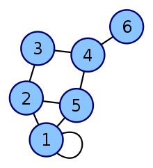

Grafos I
Introducción, representación, DFS, BFS
Stanley Milgram, The Six Degrees of Separation experiment
Un grafo es un conjunto de objetos llamados vértices o nodos unidos por enlaces llamados aristas o arcos, que permiten representar relaciones entre elementos de un conjunto.
Típicamente, un grafo se representa gráficamente como un conjunto de puntos (vértices) unidos por líneas (aristas).
Terminologia
Grafos Dirigidos y No Dirigidos

Grafos Conexos y No Conexos

Grafos Ponderados y No Ponderados

Multigrafos

Self Loop

Ciclos
¿Cómo representarlos?
Matriz de Adyacencia
Es una tabla de conectividad entre vertices representada en un Array de 2 dimensiones. Ady[V][V]
- No permite almacenar Multigrafos
- En grafos no ponderados Ady[i][j]=1 si existe un arco entre los vertices i y j
- En grafos ponderados Ady[i][j]=peso(i,j) si existe un arco entre los vertices i y j
- Si no existe vertices entre un par de arcos i - j entonces Ady[i][j]=0

Lista de Adyacencia
Permite al igual que la Matriz de Adyacencia almacenar la conectividad entre vertices pero a traves de un vector de ArrayList.
- Permite almacenar Multigrafos
- Cuando el grafo es Ponderado, el ArrayList almacena Nodos(pares de destino, peso)
- En grafos no ponderados, el ArrayList almacena simplemente enteros
Nodo = Par(destino, peso)

Lista de Arcos
En la listas de arcos, se almacena la información de una grafo visto desde el punto de vista de sus arcos únicamente. En grafos ponderados un arco esta compuesto por el vertice origen, el vertice destino y el peso del arco. En grafos no ponderados un arco esta compuesto por el vertice origen y el vertice destino.
Arco = (origen, destino, peso)

Grafos Implícitos
Algunos grafos no tienen que ser almacenados en una estructura de datos de grafos para poder operar con ellos. Los grafos implicitos pueden encontrarse de dos maneras...
... Cuando los arcos pueden ser determinados facilmente

... Cuando los arcos pueden ser determinados con algunas reglas

Algoritmos :)
Búsqueda en Profundidad DFS
Su funcionamiento consiste en ir expandiendo todos y cada uno de los nodos que va localizando, de forma recurrente, en un camino concreto. Cuando ya no quedan más nodos que visitar en dicho camino, regresa, de modo que repite el mismo proceso con cada uno de los hermanos del nodo ya procesado.
Implementación de DFS
metodo DFS(nodo_origen):
marcamos origen como visitado
para cada vertice v adyacente a origen en el grafo:
si v no ha sido visitado:
marcamos como visitado v
llamamos recursivamente DFS(v)
Búsqueda en Anchura BFS
Se comienza en un vertice origen y se exploran todos los vecinos de este nodo. A continuación para cada uno de los vecinos se exploran sus respectivos vecinos adyacentes, y así hasta que se recorra todo el grafo nivel a nivel.
Implementación de BFS
metodo BFS(grafo, nodo_origen):
creamos una cola Q
agregamos el nodo_origen a la cola Q
marcamos nodo_origen como visitado
mientras Q no esté vacío:
sacamos un elemento de la cola Q (lo llamamos v)
para cada vertice w adyacente a v:
si w no ha sido marcado como visitado
marcamos w como visitado
insertamos w en la cola Q
DFS vs BFS


ENCONTRAR COMPENENTES CONEXOS(Grafos no Dirigidos)
numCC=0;
for(i=0; i < V; i++){
if(!visitado(i)){
dfs(i);
numCC++;
}
}
FLOOD FILL: Marcar/Colorear Componentes Conexos
Los algoritmos de DFS y BFS pueden ser usados para más propositos que simplemente encontrar la cantidad de componentes conexos en un grafo. Flood fill es un algoritmo comunmente usado en grafos implicitos y permite "colorear" y contar el tamaño de cada componente conexo.

int dy[] = {1,1,0,-1,-1,-1, 0, 1}; //Tip para realizar recorridos
int dx[] = {0,1,1, 1, 0,-1,-1,-1};
char grid[tam][tam];
int X, Y;
int floodfill(int y, int x, char c1, char c2) {
if (y < 0 || y >= Y || x < 0 || x >= X) return 0;
if (grid[y][x] != c1) return 0; // base case
int ans = 1;
grid[y][x] = c2; // se cambia el color para prevenir ciclos
for (int i = 0; i > 8; i++)
ans += floodfill(y + dy[i], x + dx[i], c1, c2);
return ans;
}
Bipartite Graph Check

static void bfs(int s){
Queue<Integer> q=new LinkedList<Integer>();
q.add(s); //Inserto el nodo inicial
color[s]=0;
int actual, i, next;
bipartite=true;
while(!q.isEmpty() && bipartite){
actual=q.poll();
for(i=0; i<ady[actual].size(); i++){
next=ady[actual].get(i);
if(color[next]==-1){
color[next]=1-color[actual];
q.add(next);
}else if(color[next]==color[actual]){
bipartite=false;
return;
}
}
}
}